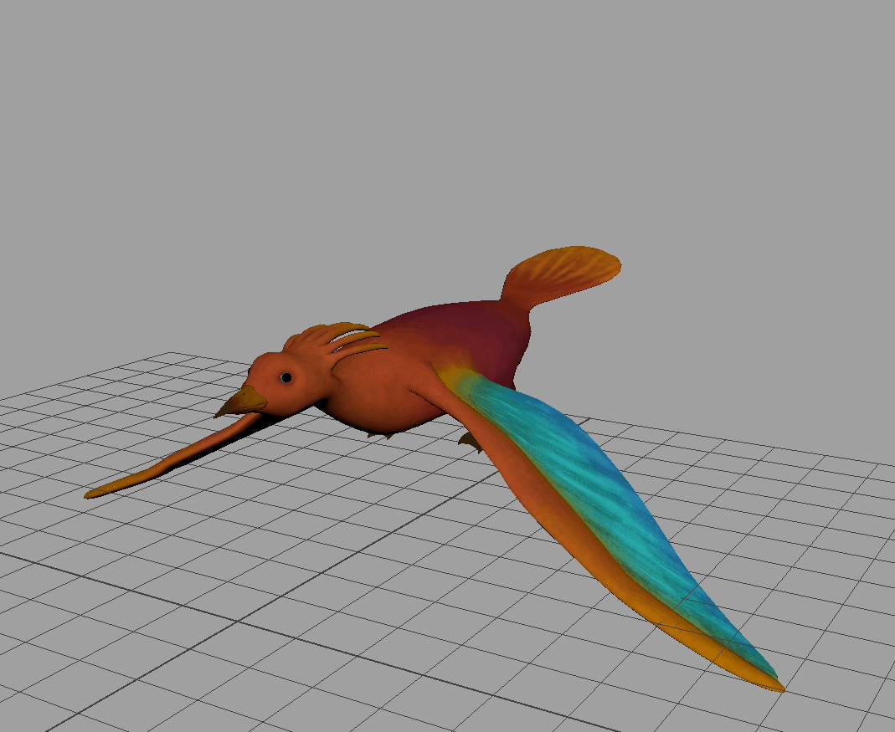

Portfolio
Rigging tool and Pose Saver
August 2016 - Dec 2016
Tools: Python, PySide, Maya
Maya tools made using Python
Read moreCatharsis
August 2016 - Dec 2016
Tools: Oculus Rift, Unreal Engine 4, Maya
Sea of Stories: VR Animation project. Rigging, effects, environment art and layout
Read more
FITYMI Animation
January 2016 - May 2016
Tools: Maya, Motionbuilder
Film project that blended live-action and 3D motion capture animation. Modeling, rigging, particle effects, and motion-capture animation editing.
Read moreSARA - the Socially Aware Robot Assistant
Summer 2016 - Fall 2016
Tools: Unity, Maya
Personal assistant project done as part of the Articulab at CMU.
Read more
Cerberus
Fall 2013
Tools: Kinect, Processing
Worked with an artist to create a Kinect-controlled game.
Read more

Catharsis
August 2016 - Dec 2016
VR art experience inspired by the book Haroun and the Sea of Stories. I worked on this project as a technical artist on rigging, effects, environment art and environment layout, using Maya and Unreal Engine 4.

I made a stream building tool for the project, using Unreal's material system and blueprints. The shape, color and glow of each stream can be customized.


I also rigged the bird that the player is riding on, using a modified version of a rigging Maya script I wrote:

Below is a video of the full experience.
The project website can be found here.
Maya tools
August 2016 - Dec 2016
Developed two Maya tools using Python, a rigging tool and a pose saver tool.
Rigging tool
The rigging tool automatically generates controls for human characters. The script takes in the names for each joint and rigs the model according to the joints, so it assumes that certain joints are present in the model.

Pose Saver
The pose saver tool allows you to save and load character poses. You can also use it to mirror poses and animation.
The model was generated using Mixamo, the UI was created using PySide.
FITYMI Animation
January 2016 - May 2016
I worked on this project as a technical artist. The film “Lovers Meet” is a blended live-action and 3D animated short film about a young man, Isaac, who finds himself inside the world of an impressionist painting.
My main task on the film was retargeting and refining mocap data. I also worked on modeling, rigging, camera setup, and lighting, using Maya and MotionBuilder.
Below is an example of how I refined the mocap animation in MotionBuilder. I first get the raw mocap data, and retarget the animation to the models. Then, I adjust the keyframes of the animation to get the final result.

I also worked on the transition scene from live-action to animation. You can see my progress video below.
The final transition effect is timestamped below, along with the final film:
The project website can be found here.
Art and Animation
Collection of work done in the class Building Virtual Worlds.


Raytracer
Fall 2012
Wrote a raytracer using C++ that supports reflections and refractions. Raytracing is a rendering technique that traces a ray through a scene to produce a 3D image. The reflection and refraction rays are done by recursively casting rays from their intersection points.
Here are some of the images I have rendered.